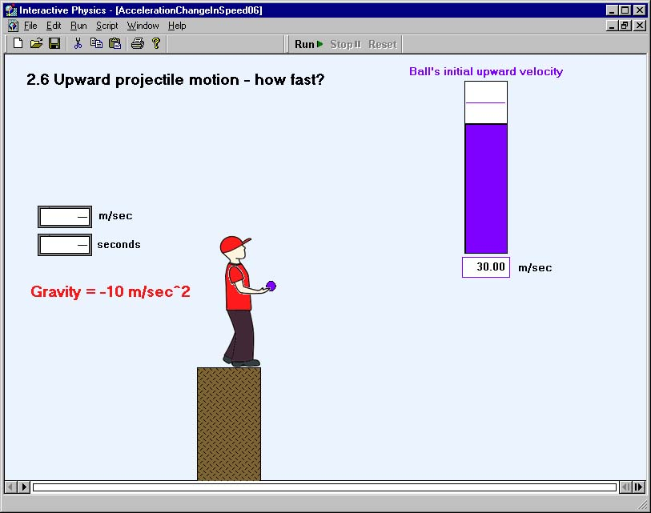

Acceleration and Change in Speed
To begin, click on a simulation. Internet Explorer may launch a "Download dialog box" or Netscape may issue a "Warning dialog box". Select "Open the file".
2.1 Change in speed, acceleration, and time
2.2 Acceleration, change in speed, and time (A)
2.3 Acceleration, change in speed, and time (B)
2.4 Constant and changing acceleration
2.5 Free fall - how fast?
2.6 Upward projectile motion - how fast? 